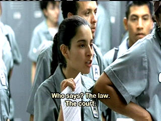
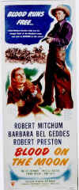
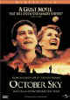

|
Bread and Roses/ A-,B+ |
|
Studio S/2000/105/ANA 1.85 |
Another in the long line of socially conscious
dramas from director Ken Loach, Bread and Roses is a fine example of
humanistic filmmaking. Loach's strong political beliefs can lead to some
excessively pedantic filmmaking, and Bread and Roses suffers slightly
from this, but overall the film is about the fine spirit of people.
A young Mexican woman, Maya, crosses the border
illegally. Her sister Rosa awaits her arrival in L.A. and has a job waiting
for her in a bar. Maya has other ideas and convinces her sister to help her
gain employment as an office cleaning person for the agency where Rosa
works. Maya is the spark that ignites change at the office building.
 |
|
Confrontation time. ©Studio S |
Maya's a terrific character. Her natural sweetness is
complimented by an honest spirit. A gutsy immigrant woman willing to work hard,
Maya wants more. She needs to feel a sense of freedom to let her spirit soar. There are too many people around her that
have been trampled to the ground by the system. When she meets union
organizer Sam Shapiro under extreme circumstances, she is inspired to fly
like a bird.
Bread and Roses chronicles the union battle to win
reasonable working conditions and wages at the office building where Maya
gets her job. The pressures created by the union stance on each of the
characters is delineated with sympathetic treatment.
Paul Laverty's screenplay moves in an elegant arc from a movie
about illegals crossing the border to a union-themed movie. Romantic
elements are tastefully integrated and family pressures are examined. The
emotional fireworks between the two sisters is amazingly combustible. Maya's
journey is a damn good one, from a illegal bus into the United States to an
INS bus out.
Director Ken Loach comes from a documentarian's point of view. Most
of the film is shot very straight forward. Wild hand-held camera work at the opening set me
to worrying that director Loach has made a disastrous stylistic
decision, but happily, there's only a couple of short instances more. script floats in a natural direction. Artifice has
been parched from the pages.
Maya is played with lovely naturalness by Pilar
Padilla in her screen debut. Padilla plays it like a real person. Director
Roach knows how to extract natural performances from his players. Adrian Brody is very convincing in the role of union
organizer Sam Shapiro. Elpidia Carrillo is powerful as Rosa.
Bread and Roses get good treatment on DVD from Studio
Home Entertainment. Handsome color saturation contributes to the overall cinematic looking transfer.
Light output is excellent with a good contrast balance. Black level is
strong and shadow detail is properly revealing. Maya's short tenure as
a bar maid provides some excellent looking colorful bar scenes. A few soft scenes but
I
think it stems mostly from the naturalistic style of filmmaking and some
difficult focus pulling. Grain is impressively controlled. English titles
are easy to read. In
the upbeat dance sequence, the Dolby Digital 5:1 surround creates a fine
ambiance.
Reviewed on a Sharp 9000VX DLP Projector
|
|
|
|

Selections from the
Feature Archive include articles on Akira Kurosawa,
Blonde Bimbos,
Frank Darabont,
Steven Culp,
John Herzfeld or
Vietnam: The Hollywood Pariah, and many
more....|
Epic Images of Kurosawa

Click on the image above for an original view of
Akira Kurosawa's work


The Movie Poster Archive
include extensive poster images from the films of stars like Susan Hayward,
Kirk Douglas, Katharine Hepburn and many more. Our featured star is
Robert Mitchum

October Sky/A,A

Johnston’s glorious montage work accompanied by Marc Isham's stunning
Americana score are reason enough for watching this exquisite movie.

 Kinoeye Archive Kinoeye Archive
This is a resource of all content-rich materials on the web
relating to Central and East European cinema. The ultimate aim of the
Kinoeye Archive is to provide a near-as-damn-it definitive index of
intelligent and thoughtful English-language analysis of Central and Eastern
European cinema on the web.
 Have you visited
Home Theater Talk
lately? One of the friendliest places on the Net for Home Theater and DVD
discussion, you can get help for installation problems or simply share your
opinions with other Vidiots. Have you visited
Home Theater Talk
lately? One of the friendliest places on the Net for Home Theater and DVD
discussion, you can get help for installation problems or simply share your
opinions with other Vidiots.
|